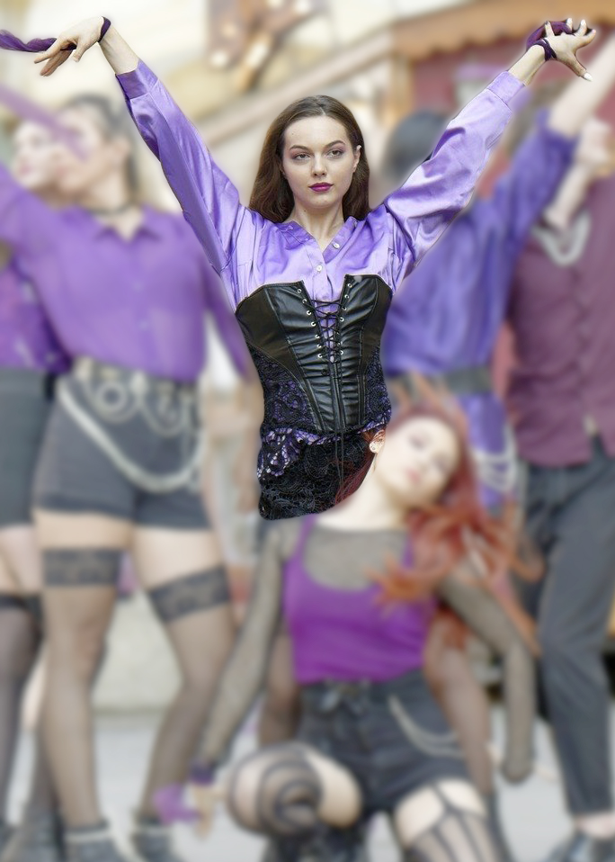
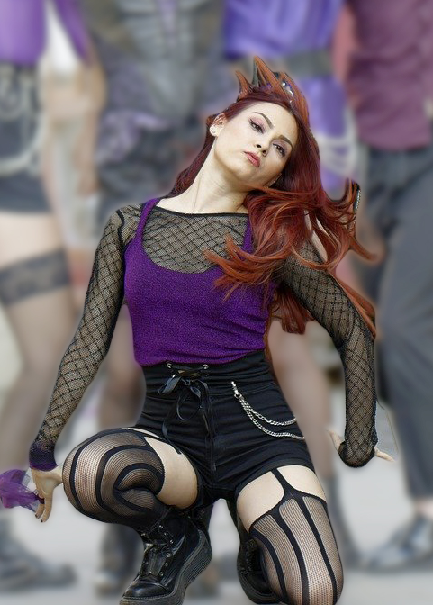
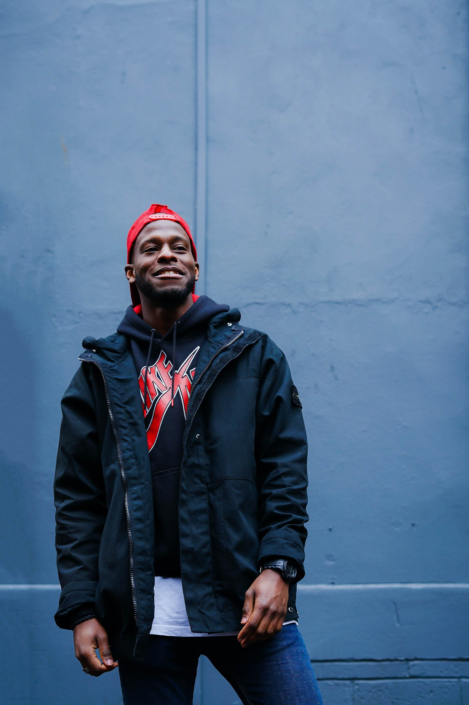
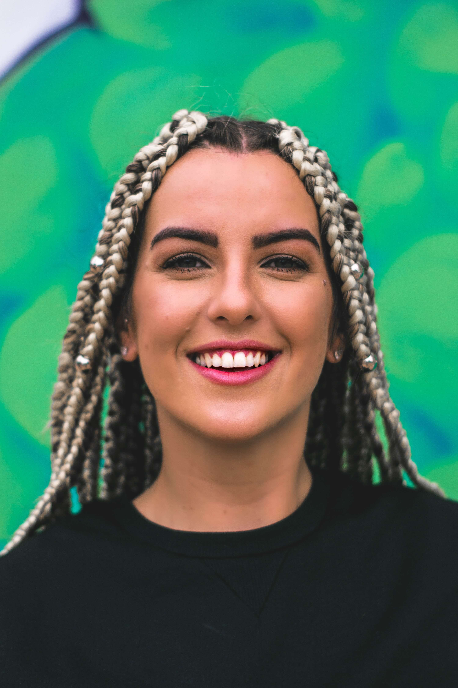

A 24 ans, Marie est une femme haute en couleurs ! Mais au-delà de ses folies capillaires, cette artiste cache de nombreux talents : acrobaties, danse moderne, elle est aussi la costumière attitrée de la troupe !


La jeune pousse de la troupe, voici Inès, 21 ans ! Cette ancienne gymnaste ne quitte plus le Karada Circus, elle a su se démarquer avec ses capacités physiques, une force jamais vue ! Elle dansait déjà avec la troupe dans les rues, à ses débuts en 2017.
Mais que serait la troupe sans sa danseuse russe ? Voici Anna, 26 ans, acrobate et contorsionniste. Née en Russie, elle atterrit à Paris en 2017 pour poursuivre sa carrière, et puis finalement, participe à la création de Karada Circus.

Et voici le bonhomme du groupe, Joshua ! 25 ans et tellement d’idées qui fusent, réel élément fédérateur du groupe, c’est même lui qui a créé la troupe Karada Circus en 2017 ! Et s’il possède des capacités de leader, il est aussi un chorégraphe et un acrobate hors pair !
Le soleil de la troupe, voici Héléna, 24 ans ! D’origine Tahitienne, elle est venue en France en 2015 pour intégrer une école de danse moderne; et si tout ne s’est pas passé comme prévu, elle a eu le courage de persévérer et de finalement participer à l’incroyable aventure Karada Circus, depuis les rues de France jusqu’aux rues du Monde.

Et enfin, voici la vagabonde de Karada Circus, Diellza ! GPS et même traductrice internationale puisqu’elle est née et a grandi dans un cirque. Une acrobate née, rencontrée lors d’un échange artistique en 2018. A 24 ans, elle voyage désormais avec le Karada Circus !